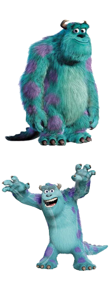
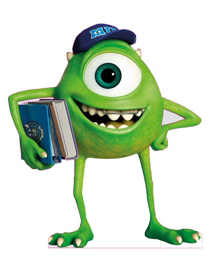

(Салли)
Среди сотрудников «Корпорации» лидером по запугиванию является Джеймс П. Салливан по прозвищу «Салли», работающий вместе с другом Майком Вазовски. Конкуренцию ему составляет монстр Рэндалл Боггс, похожий на ящерицу, который завидует успехам Салли…

(Майк)
С детства Майк Вазовски выделялся среди монстров тем, что не обладал устрашением и не имел способности напугать кого-то. Но после школьной экскурсии на «Корпорацию монстров» Майк загорается желанием получить работу страшилы в будущем....